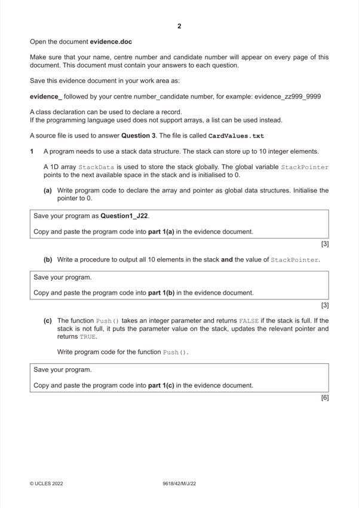

Question 1

Original paper page 2
Part 1(a) — solution
- declaring array StackData and pointer StackPointer as (global data structures)
- StackData has 10 integer elements
- StackPointer initialised to 0
Visual Basic (VB.NET)
Dim StackData(9) As Integer
Dim StackPointer As Integer
Sub Main()
StackPointer = 0
end Sub
Python
global StackData #integer
global StackPointer
StackData = [0,0,0,0,0,0,0,0,0,0] #integer
StackPointer = 0
Mark points
- declaring array StackData and pointer StackPointer as (global data structures)
- StackData has 10 integer elements
- StackPointer initialised to 0
Part 1(b) — solution
- procedure header with sensible identifier (and end where appropriate)
- outputting StackPointer
- outputting all 10 elements in array
Visual Basic (VB.NET)
Sub PrintArray()
Console.WriteLine(StackPointer)
For x = 0 To 9
Console.WriteLine(StackData(x))
Next
End Sub
Python
def PrintArray():
global StackData
global StackPointer
print(StackPointer)
for x in range (0, 10):
print(StackData[x])
Mark points
- procedure header with sensible identifier (and end where appropriate)
- outputting StackPointer
- outputting all 10 elements in array
Part 1(c) — solution
- function Push() taking an integer parameter
- checking if stack is full …
- …and returning FALSE
- (if not full) storing parameter to stack at StackPointer …
- …incrementing StackPointer
- …returning TRUE
Visual Basic (VB.NET)
Function Push(DataToPush)
If StackPointer = 10 Then
Return False
Else
StackData(StackPointer) = DataToPush
StackPointer = StackPointer + 1
Return True
End If
End Function
Python
def Push(DataToPush):
global StackData
global StackPointer
if StackPointer == 10:
return False
else:
StackData[StackPointer] = DataToPush
StackPointer = StackPointer + 1
return True
2022 Page 6 of 36
9618/42 Cambridge International AS & A Level – Mark Scheme May/June 2022
Mark points
- function Push() taking an integer parameter
- checking if stack is full …
- …and returning FALSE
- (if not full) storing parameter to stack at StackPointer …
- …incrementing StackPointer
- …returning TRUE
Part 1(c) — solution
Mark points
- Include the ideas shown in the solution above.
Part 1(d)(i) — solution
- Inputting 11 numbers …
- …calling Push() with each number input as a parameter …
- …outputting appropriate message if TRUE returned
- …outputting appropriate message if FALSE returned
- Calling their output procedure after all 11 additions
Visual Basic (VB.NET)
Sub Main()
StackPointer = 0
Dim TempNumber As Integer
For x = 0 To 10
Console.WriteLine("Enter a number")
TempNumber = Console.ReadLine()
If Push(TempNumber) Then
Console.WriteLine("Stored")
Else
Console.WriteLine("Stack full")
End If
Next
PrintArray()
Console.ReadLine()
End Sub
2022 Page 8 of 36
9618/42 Cambridge International AS & A Level – Mark Scheme May/June 2022
Mark points
- Inputting 11 numbers …
- …calling Push() with each number input as a parameter …
- …outputting appropriate message if TRUE returned
- …outputting appropriate message if FALSE returned
- Calling their output procedure after all 11 additions
Part 1(d)(i) — solution
- StackPointer = 0
- StackData = [0,0,0,0,0,0,0,0,0,0]
- TempNumber = int(input("Enter a number"))
- if Push(TempNumber) == True:
Python
#main
StackPointer = 0
StackData = [0,0,0,0,0,0,0,0,0,0]
for x in range(0, 11):
TempNumber = int(input("Enter a number"))
if Push(TempNumber) == True:
print("Stored")
else:
print("Stack full")
PrintArray()
Mark points
- StackPointer = 0
- StackData = [0,0,0,0,0,0,0,0,0,0]
- TempNumber = int(input("Enter a number"))
- if Push(TempNumber) == True:
Part 1(d)(ii) — solution
1 mark for inputting all 11 numbers, message for first 10 saying added (11 to 20), message stating 11th number stating 1
stack full. Full array contents output (11 12 13 14 15 16 17 18 19 20).
e.g.
2022 Page 10 of 36
9618/42 Cambridge International AS & A Level – Mark Scheme May/June 2022
Mark points
- Include the ideas shown in the solution above.
Part 1(e)(i) — solution
- Pop() function header (and close where appropriate) and returning a number in all possible situations
- checking if stack is empty (StackPointer is 0) and returning -1
- (otherwise) accessing the item at the top of the stack …
- …decrementing the stack pointer
- …returning the item removed
Visual Basic (VB.NET)
Function Pop()
Dim ReturnData As Integer
If StackPointer = 0 Then
Return -1
Else
ReturnData = StackData(StackPointer – 1)
StackPointer = StackPointer - 1
Return ReturnData
End If
End Function
Python
def Pop():
global StackData
global StackPointer
if StackPointer == 0:
return -1
else:
ReturnData = StackData[StackPointer - 1]
StackPointer = StackPointer - 1
return ReturnData
2022 Page 11 of 36
9618/42 Cambridge International AS & A Level – Mark Scheme May/June 2022
Mark points
- Pop() function header (and close where appropriate) and returning a number in all possible situations
- checking if stack is empty (StackPointer is 0) and returning -1
- (otherwise) accessing the item at the top of the stack …
- …decrementing the stack pointer
- …returning the item removed
Part 1(e)(i) — solution
Mark points
- Include the ideas shown in the solution above.
Part 1(e)(ii) — solution
- output of before removed with 11 inputs
- output of stack (after, this could be 11–20, 11–18, or 11–18 then ‘null’ ‘null’s)
Mark points
- output of before removed with 11 inputs
- output of stack (after, this could be 11–20, 11–18, or 11–18 then ‘null’ ‘null’s)
Part 1 — solution
- function declaration taking appropriate parameters and recursive calls
- remainder of the function is accurate including appropriate DIV operator
Visual Basic (VB.NET)
Function BinarySearch(ByVal SearchArray(,) As Integer, Lower As Integer, Upper As Integer,
SearchValue As Integer)
Dim Mid As Integer
If Upper >= 0 Then
Mid = (Lower + (Upper - 1)) \ 2
If SearchArray(0, Mid) = SearchValue Then
Return Mid
ElseIf SearchArray(0, Mid) > SearchValue Then
Return BinarySearch(SearchArray, Lower, Mid - 1, SearchValue)
Else
Return BinarySearch(SearchArray, Mid + 1, Upper, SearchValue)
End If
End If
Return -1
End Function
Python
def BinarySearch(SearchArray, Lower, Upper, SearchValue):
if Upper >= 0:
Mid = int((Lower + (Upper - 1)) / 2)
If SearchArray[0][Mid] == SearchValue:
return Mid
elif SearchArray[0][Mid] > SearchValue:
return BinarySearch(SearchArray, Lower, Mid-1, SearchValue)
else:
return BinarySearch(SearchArray, Mid+1, Upper, SearchValue)
return -1
2022 Page 22 of 36
9618/42 Cambridge International AS & A Level – Mark Scheme May/June 2022
Mark points
- function declaration taking appropriate parameters and recursive calls
- remainder of the function is accurate including appropriate DIV operator